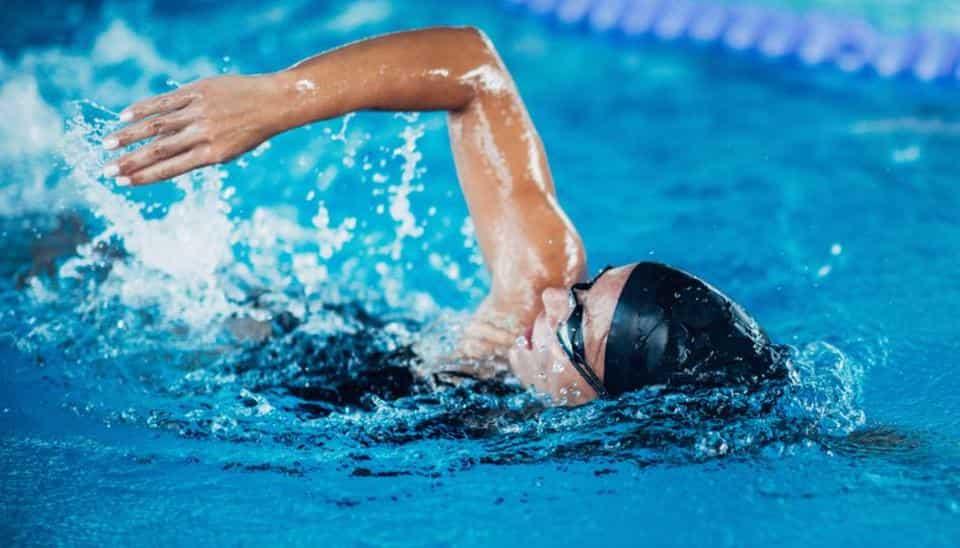

I started swimming when I was 8 under my parents instruction. They wanted me to learn the basic skills so that
I could be trusted in water at swimming pools or at the beach. They never expected that I would fall in love with
the sport and end up competing in competitions all around the country and representing my school in the All-Irelands.

At the beginning the training seemed futile, I wasn't old enough or strong enough to attempt the 25 metre lengths of the
pool so was put in with the other kids that swam relentless widths to build up our stamina. It felt pointless and I was
left very disheartened after each training session. My parents willed me to continue going and promised I would see
progress soon. Sure enough I did and eventually progressed to the length training on Friday nights and Saturday mornings.
The change from swimming one width at a time to back-to-back lengths with no breaks hit me like a truck and it was hard to
to keep up with the other kids that had been training like this for a long time. Nonetheless I kept at it and improved my
skills and started to compete at galas representing my club with some of my closest friends whom I never would have met if
I had never started the sport.